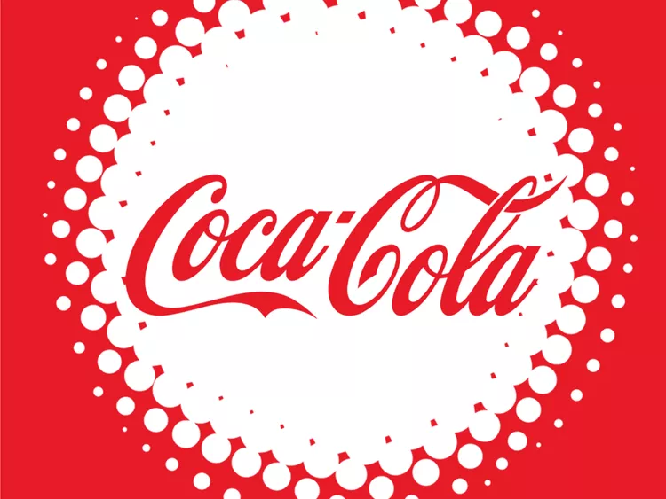

Coke Has a Brand-New Flavor, and It's Not What We Expected
Coca-Cola has made some controversial moves in its illustrious history. A few years ago, it discontinued Tab, the brand’s first diet soda, and despite a fan-led campaign to bring it back, it hasn’t been seen since 2020. And who could forget New Coke? The 1985 reformulation of the original Coke wasn’t a popular choice, so it didn’t take long for Coca-Cola to bring back the original.
Coke is also continuously adding new varieties. In 2020 it debuted Coca-Cola Coffee and Sprite Ginger but discontinued both just two years later. Coke just dropped its newest limited-edition flavor, and we have no idea how long it will be around, but we do know this—it’s not what we expected.
Ingredients:
- Carbonated Water
- Sugar
- Food Acid (338)
- Colour (Caramel 150d)
- Flavour
- caffeine
steps:
- Pure water is subjected to sophisticated filtering, softening and disinfecting to remove allimpurities.
- Sugar isadded, alongwith the appropriate beverage concentrate to produce‘syrup’, the basic component for the soft drink
- The mixture is saturated with carbon dioxide at a low temperature and under high pressure togive the drinks their renowned ‘fizziness’.
- Automated machinery dispenses the mixture, in precisely calculated quantities, into sterilisedbottles while another cans, caps or seals them.
- 5The containers move to another machine which applies labels and bar codes, after which theyare automatically inspected to guarantee they meet all requirements.
- After final checking, bottles and cans are transported to machines which pack them in cartonsor boxes before being laces on wooden pallets